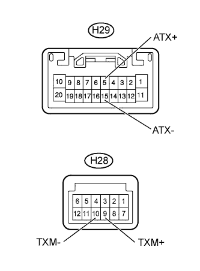

AUDIO AND VISUAL SYSTEM (w/o Multi-display) > Radio Receiver Communication Error |
| 1.IDENTIFY COMPONENT SHOWN BY SUB-CODE |
Enter the diagnostic mode.
Press the preset switch "channel 3" to change to "Detailed Information Mode".
Identify the component shown by the sub-code.
| NEXT | |
| 2.CHECK COMPONENT SHOWN BY SUB-CODE |
Select the component which has stored this code.
| Component | Proceed to |
| Except radio receiver assembly | A |
| Radio receiver assembly (190) | B |
|
| ||||
| A | |
| 3.CHECK POWER SOURCE CIRCUIT OF COMPONENT SHOWN BY SUB-CODE |
Inspect the power source circuit of the component shown by the sub-code.
| Component | Proceed to |
| Stereo component amplifier assembly (440) | Stereo Component Amplifier Power Source Circuit (Click here) |
| Multi-media interface ECU (388) | Multi-media Interface ECU Power Source Circuit (Click here) |
| NEXT | |
| 4.INSPECT RADIO RECEIVER ASSEMBLY |
|  |
Disconnect the H29 and H28 radio receiver assembly connectors.
Measure the resistance according to the value(s) in the table below.
| Tester Connection | Condition | Specified Condition |
| H29-5 (ATX+) - H29-15 (ATX-) | Always | 60 to 80 Ω |
| H28-9 (TXM+) - H28-10 (TXM-) | Always | 60 to 80 Ω |
|
| ||||
| OK | |
| 5.CHECK HARNESS AND CONNECTOR (RADIO RECEIVER - COMPONENT SHOWN BY SUB-CODE) |
Referring to the wiring diagram below, check the AVC-LAN circuit between the radio receiver assembly and the component shown by the sub-code.
Disconnect all connectors between the radio receiver assembly and the component shown by the sub-code.
Check for an open or short in the AVC-LAN circuit between the radio receiver assembly and the component shown by the sub-code.
|
| ||||
| OK | |
| 6.REPLACE COMPONENT SHOWN BY SUB-CODE |
Replace the component shown by the sub-code with a normal one and check if the same problem occurs again.
|
| ||||
| OK | ||
| ||